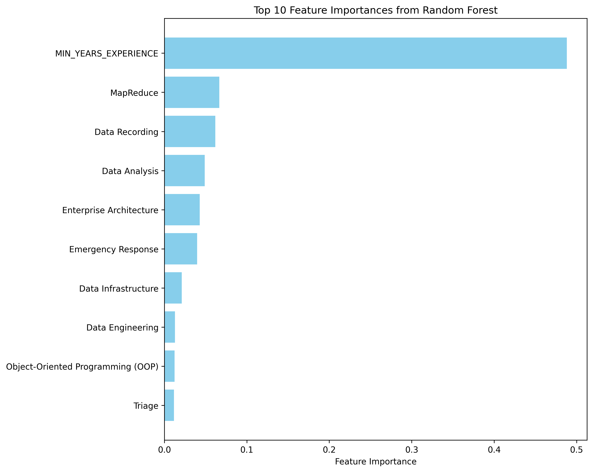

Quantitative Analysis of Business Analytics, Data Science and Machine Learning
1 Introduction to Quantitative Analysis
Now that we had a deep dive in qualtitative analysis of Machine Learning, Data Analyst and Data Scientist positions, we want to leverage the Lightcast job postings data from 2024 to verify whether the findings from the research align with the current data from the market. One of the consistent themes from the research was an overlap between Machine Learning and Data Science positions because of skillsets required for these experienced roles. We will also explore if Business analyst/Data analyst positions have few most in-demand skillsets and what are they as these are foundational roles in data.
2 Methodology
The first step would be to clean the dataset and identify the most relevant columns. Subset the data for Machine Learning, BA/DA and Data scientist positions data so these can be processed in silos Peform EDA for each role and highlight patterns or trends Perform Random Forest algorithms to predict salaries for these positions Summarise the findings
3 Data Cleaning and Preprocessing
Code
import pandas as pdimport numpy as npimport plotly.express as pximport seaborn as snsimport matplotlib.pyplot as pltimport polars as plfrom pyspark.sql import SparkSessionimport plotly.io as pionp.random.seed(42)pio.renderers.default ="notebook+notebook_connected+vscode"# Start a Spark sessionspark = SparkSession.builder.appName("JobPostingsAnalysis").getOrCreate()# Load the CSV file into a Spark DataFramedf = spark.read.option("header", "true").option("inferSchema", "true").option("multiLine","true").option("escape", "\"").csv("./data/lightcast_job_postings.csv")# Show schema#df.show(5, truncate = False)
Setting default log level to "WARN".
To adjust logging level use sc.setLogLevel(newLevel). For SparkR, use setLogLevel(newLevel).
25/06/29 21:58:20 WARN NativeCodeLoader: Unable to load native-hadoop library for your platform... using builtin-java classes where applicable
[Stage 1:> (0 + 1) / 1]
25/06/29 21:58:35 WARN SparkStringUtils: Truncated the string representation of a plan since it was too large. This behavior can be adjusted by setting 'spark.sql.debug.maxToStringFields'.
[Stage 2:> (0 + 1) / 1]
[Stage 3:> (0 + 1) / 1]
+---------------------------------------------------------------------------------------------------------------------------------+
|TITLE_CLEAN |
+---------------------------------------------------------------------------------------------------------------------------------+
|enterprise artificial intelligence machine learning ai ml platform product manager senior lead data product management consultant|
+---------------------------------------------------------------------------------------------------------------------------------+
ML specific positions are limited in title clean - Since we cannot seem to distinguish the data between Data Science and Machine Learning, from the dataset using job titles, we will focus on Data Scientist and Business Analyst positions. Qualitative data also suggested a strong overlap between Data Science and Machine Learning positions because the current job market expects candidates for Data scientist positions to have skills in not just ML models but production deployment and Artificial intelligence as well. (Nobrega, 2024)
Summarizing the cleaning of data for both positions: The most important data cleaning steps performed here were slicing the data for each position to process them individually. Location column was separated into Latitude and Logitude to enable geographic analysis of job postings. Remote type, education levels and employment type columns were converted into categories to visualized summarized data. Skillsets columns will be cleaned at a later stage when we analyze top skills for each position and then progress into Machine Learning.
4 Geographical analysis of Business Analytics, Data Science and Machine Learning
/tmp/ipykernel_10302/492849666.py:5: FutureWarning:
The default of observed=False is deprecated and will be changed to True in a future version of pandas. Pass observed=False to retain current behavior or observed=True to adopt the future default and silence this warning.
/tmp/ipykernel_10302/492849666.py:6: FutureWarning:
The default of observed=False is deprecated and will be changed to True in a future version of pandas. Pass observed=False to retain current behavior or observed=True to adopt the future default and silence this warning.
Analysis - Our first step in laying our career path is to narrow down the geographical locations where the positions are frequently available, so we have better chance of landing a job. Higher the number of positions available in a location, higher the chances of landing a job even though the competition is high, the odds of receiving an offer remain optimistic. The above plot is an hvplot providing a side by side comparison of top 10 states in the US for Business Analyst/Data Analyst and Data Scientist positions. The data is aggregated by the number of positions available in each state. The plot shows that California, Texas, New York, and Florida are the top states for both positions, with California having the highest number of positions available. This is expected as these states have high concentrations of technology companies and startups, which are the primary employers of data professionals. To add a layer of granularity, we can see that very few positions focus on education levels for both positions. However, Data scientist positions generally demand for a Masters or PhD degree alongwith a strong experience in analytics and expertise in ML models. Surprisingly, Massachusetts does not fall in the top 10 states which is our preferred state but with current labor market these initial signs suggest that relocation should be considered to keep enough options open.
Analysis - We first identified our preferred industry and those were Marketing (Unclassified industry), Healthcare and Finance. By plotting the job postings for both BA/DA and Data Scientist positions, we looked at which states have high postings for these industries. The above plot is specifically for BA/DA jobs, we can see that along the east cost these industries are more prominent, specially in NYC, Boston, Philadelphia and Washington. When we move to the west, the tight cluster as expected is around LA and San Jose in California. Finance industry is more prominent on the east likely because of the presence of Wall street in NYC.
Analysis- This plot focuses on the Data Science positions and it is evident that the number of jobs are considerably higher for this position regardless of the industry. The trend is similar to BA/DA positions in terms of clustering around east cost states and on the west coast in Sacramento, CA and San Jose. However, surprisingly for us Seattle has dense cluster for Healtcare and North Carolina and Chicago seem to have a big cluster for Marketing (Unclassified industry)
5 Salary Comparison & Trends across both positions
Salary distribution analysis: We have now moved to the monetary value offered by both positions and we already know that data science being the senior position commands higher salary but the purpose of this plot is to identify what is the sweet spot of the salary range where both positions lie in 2024. The peak for BA/DA positoions is between $80K-$100K. We can also see from the overlay plot that the violin plot starts to shrink immediately after $100K and the right tail is light compared to Data science positions. For Data Scientist the median salary is $120K and the upper fence is almost $240K with much heavier right tails which is likely influenced by the information sector where salaries for this position can be as good as senior software developer position.
Salary distribution by Industry - In the previous plot, we compared salaries at the highest level, in this case we are being more specific to industries we are interested in (Unclassified for Marketing, Finance and Health care). For BA/DA positions we can see that Finance sector appears to be more lucrative compared to unclassified and Healthcare. Median salary for full time BA/DA role is $112K whereas for Marketing and Healthcare it is close to $95K which seems to be okay for full time positions but the range does fall as low as $40K which could be for junior or entry level positions which is worrisome specially for us as international students as there is benchmark for H1b approval in terms of salaries. In terms of Data Science, all the 3 industries are very lucrative as the average salary is well above $120K and can go as high as $220K. Finance and Insurance in this case display more rapid growth.
6 Skills Trends Analysis across Business Analyst/Data Analyst and Data Scientist positions
Analysis Top 10 skills - The above plot highlights top 10 skills from each skill type (Common, Specialized and Software skills), this will give a full overview of what is required to be successful in the role and match the demands of the current labor market in these domains. In terms of common skills, we can see that common skills or so to say soft skills like communication, Management and Problem solving are in both roles but the presence is considerably higher in Data scientist. Communication as expected is at the highest because both these roles require high collaboration. Strangely for data scientist, the postings that require Python is less but that could also be because some postings have the tendency to include Python libraries instead of using the tool name because they are looking for specific candidates who should know these libraries. Computer Science seems to be one of the highest requirement for data science which can be influenced by the Information and Tech sector. On BA/DA roles, Dashboarding and Business Intelligence tools are on higher scale because that is what the role entails, there is consistent use of SQL and BI tools alongwith some use of Python.
Average Experience by Industry Analysis - When it comes to skills analysis, it is not just if a candidate knows the skill but how much experience is required also is critical. As per (Pushpa Singh & Garg, 2024), he and his co-authors had explained that the industry at this point in time is valuing experience of using the skills on real-world data than just backing of academic projects. Hence, as we step into the job market in search of an ideal job it is critical to know what are the demands of the companies in our preferred industries (Healthcare, Marketing and Finance) in terms of the number of years of experience. Although the average minimum years experience for all these 3 industry groups is above 3, we can speculate this is likely caused because of some of the executive positions failling under these industries. However, it is important to note that even after removing those outliers we should be speculating something aroun 0-2 years range and that highlights the importance of collaborating on real-world projects, internships and putting in the work beyond the academics.
7 Machine Learning: Random Forest for predicting Salary
8 Cleaning the target variable and features in the dataset: Feature Engineering
Feature Selection - For continuous variables I have used minimum experience required for a job posting because that will be an indicator for junior and more senior level roles as we have some executive roles as well. For categorical variables, we have selected specialized skills because those skills ideally set the salary, for eg if we know SQL plus AWS services and how to work with RDS then we might command higher salary then those that know SQL and Excel but no cloud knowledge. Also we used Vectorizer instead of one Hot encoding just to limit the number of features and keep the computation stable.
9 Splitting the prepared data into Training and Test set
10 Visualizing Feature Importance

Top 10 Rf imp
11 Extracting evaluation metrics
Metric Value
Root Mean Squared Error (RMSE) 29663.550
R² (Coefficient of Determination) 0.514
RF Evaluation & Analysis - From extracting the feature importances we know that minimum years experience plays a strong driver in predicting salary, however in terms of others like Enterprise Architecture, Data analysis and MapReduce are specialized skills and since we are using both Business Analyst and Data Scientist job postings to train this it is hard to evaluate if this would affect the salaries of both the positions in the same way. Mostly Mapreduce and cloud architecture are not the skills that are expected from a data analyst so this is likely attributed to Data Scientist. From the results it seems it would have been better to train the model and then make predictions using it separately for both positions, this would have limited the number of features and would have made the model more streamlined. If we look at the RMSE of the model it is deviating $29.6K from the actual salary values while making predictions which is acceptable considering the real-world factors where only skill sets and experience alone won’t determine the final value of the salary. However, these are strong drivers and from the R2 value the model is doing much better than capturing the mean value of the salary in the data range, however we would better look at RMSE values and features context than R2 for picking a model.
12 Conclusion
Summarizing the analysis from the various processes that we conducted above, we can briefly conclude that the market is extremely competitive at this stage, even though we did not look at specific AI trends from skills perspective we know that it has pushed the standards in the market up for data analysts as well by some margin. SQL is the core of data analysis be it data scientist or analyst, this tool becomes the first access point to data and is essential to condense the data into smaller subsets relatively to process it further of ML experimentation or insights reporting through dashboards. From an experience standpoint, simply completing Masters with generalized projects won’t make the cut, there has to be specific strategic learning process to get ahead of the clutter in the labor market. Lastly, in terms of further analysis we could further group the skills into subsets and use some NLP techniques to capture what specific skills in an industry can be mapped to either of these positions and what is common irrespective of the vertical. Although we are able to make some general statements about this but interesting patterns could be discovered from this analysis.
Pushpa Singh, A. R. M., & Garg, P. (2024). Data analytics and machine learning: Navigating the big data landscape (Vol. 145). Springer Nature. https://doi.org/10.1007/978-981-97-0448-4